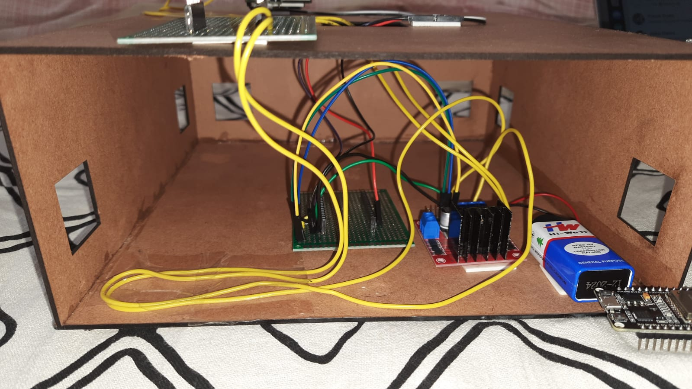

Aim
To provide Voltage as an Input from a Remote Place(i.e. Send the value from the Website), interpret it,
perform all the necessary
Mathematical Computations, Calculate the corresponding RPM Value and draw the RPM V/S Voltage Graph for
the user.
Apparatus
-
Motor Driver (IC L293D)
-
RPM Sensor (IC HC-020K)
-
9V Battery
-
ESP 32
-
PCBS (2)
-
DC Motor
-
ESP 32 CAM
THEORY
The main fundamentals behind the experiment can be summarized as:
-
The DC motor speed in general is directly proportional to the supply voltage, so if reduce the voltage
from 9 volts to 4.5 volts then
our speed become half of what it originally had. But in practice, for changing the speed of a dc motor
we cannot go on changing the
supply voltage all the time. The speed controller PWM for a DC motor works by varying the average
voltage supplied to the motor.
-
The L293D IC receives signals from the microprocessor and transmits the relative signal to the motors.
It has two voltage pins,one
of which is used to draw current for the working of the L293D and the other is used to apply voltage to
the motors.
It acts as a Current Amplifier and Amplifies the Low Current Signal.
-
Meanwhile, the Speed of the Rotating DC Motor is calculated by the RPM Sensor which Calculates the Speed
by noting the number of holes(spokes)
it encounters in 1 second. Using this we calculate the pulses per turn and using this value, we can
calculate the value of the RPM Sensor.
-
All of this data is sent on ThingSpeak Channel and correspondingly retreived from there on the website
with the Graph. The Camera Live Streams the
Rotation of the RPM Sensor.
